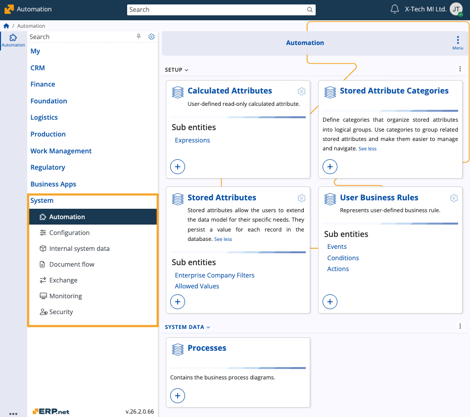

System
The System module forms the foundational infrastructure of ERP.net. It provides the core services for configuration, internal system data, document lifecycle control, data exchange, technical monitoring, business automation, and security.
These services support and protect all functional modules by supplying configuration options, internal jobs and queues, document metadata, integration endpoints, audit information, and centralized access control.

Structure
System functionality is organized into several submodules, each focused on a specific technical area.
They enable customization, secure access control, integration with external systems, and continuous operation and monitoring in ERP.net.
| Submodule | Purpose |
|---|---|
| Automation | Provides user-driven business automation. It contains calculated attributes, stored attributes and their categories, user business rules (events, conditions, actions), and process diagrams. Used to extend entity data, define read-only calculated values, and implement rule-based automation without changing application code. |
| Configuration | Holds global configuration and runtime infrastructure settings. It includes hierarchical configuration options, system jobs, UI translations, webhook templates, as well as web hosts and web sites that can be hosted. |
| Internal system data | Stores internal system data produced and used across ERP.net. It includes user-defined default values for columns, document jobs, document print images, document versions, instance change requests, notifications, object changesets and changes, object files, and generic object records with versioning. It also allows for the creation and management of reports. |
| Document flow | Defines the structural and behavioral metadata for documents across ERP.net. It manages document party roles, printout layouts, user-defined data sources (queries), document amount types, document types, and sequences. |
| Exchange | Describes data exchange operations (import, export, and similar) together with their related objects. |
| Monitoring | Provides various dynamic views and definitions for technical and operational monitoring. Its reach includes but is not limited to audit log entries, information messages, instance statistics, resolved conflicts, scheduled document events, and update procedure executes. |
| Security | Implements identity and access control across ERP.net. Manages groups and users (with roles, provider tokens, and provider logins), domains, entities with secured access, and user roles. |
Note
The screenshot taken for this article is from v.26 of the platform.